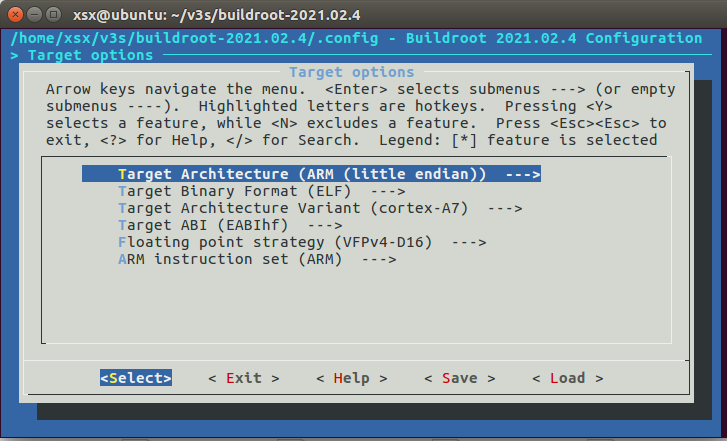
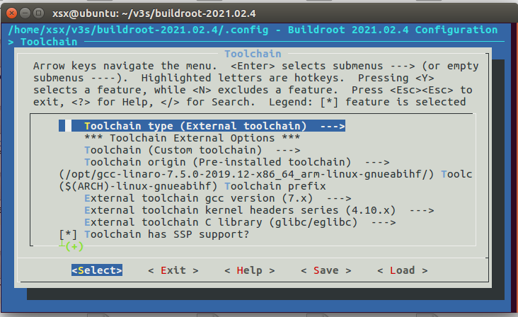

编译V3S系统
2023-02-01
交叉编译链工具安装
- 工具下载地址，这里使用7.5版本的交叉编译链，建议迅雷下载
https://releases.linaro.org/components/toolchain/binaries/7.5-2019.12/arm-linux-gnueabihf/gcc-linaro-7.5.0-2019.12-x86_64_arm-linux-gnueabihf.tar.xz
- 下载完后，复制到ubuntu中
- 解压
tar -vxJf gcc-linaro-7.5.0-2019.12-x86_64_arm-linux-gnueabihf.tar.xz - 复制到系统目录
sudo cp -r ./gcc-linaro-7.5.0-2019.12-x86_64_arm-linux-gnueabihf /opt/ - 添加到系统环境变量
#打开配置文件 sudo vim /etc/bash.bashrc #在文件最后添加 PATH="$PATH:/opt/gcc-linaro-7.5.0-2019.12-x86_64_arm-linux-gnueabihf/bin" #使文件生效 source /etc/bash.bashrc - 验证生效，重启
arm-linux-gnueabihf-gcc -v
U盘分区
安装gparted工具
sudo apt-get install gparted分区1
从1M偏移处开始，大小32M，fat16格式分区2
剩余所有空间，exe4格式
编译u-boot
- 下载荔枝派u-boot
git clone https://github.com/Lichee-Pi/u-boot.git -b v3s-current - 修改 include/configs/sun8i.h, 使u-boot可以直接从tf卡启动
#define CONFIG_BOOTCOMMAND "setenv bootm_boot_mode sec; " \ "load mmc 0:1 0x41000000 zImage; " \ "load mmc 0:1 0x41800000 sun8i-v3s-licheepi-zero-dock.dtb; " \ "bootz 0x41000000 - 0x41800000;" #define CONFIG_BOOTARGS "console=ttyS0,115200 panic=5 rootwait root=/dev/mmcblk0p2 earlyprintk rw vt.global_cursor_default=0" - 编译
make ARCH=arm CROSS_COMPILE=arm-linux-gnueabihf- LicheePi_Zero_800x480LCD_defconfig make ARCH=arm CROSS_COMPILE=arm-linux-gnueabihf- -j8 - 烧录到TF卡
sudo dd if=u-boot-sunxi-with-spl.bin of=/dev/sdb bs=1024 seek=8 - 此时插入TF启动，即可看到u-boot的启动信息
编译linux
下载linux
git clone -b zero-5.2.y --depth 1 https://github.com/Lichee-Pi/linux.git编译
make ARCH=arm licheepi_zero_defconfig make ARCH=arm menuconfig make ARCH=arm CROSS_COMPILE=arm-linux-gnueabihf- -j8将
arch/arm/boot/zImage和arch/arm/boot/dts/sun8i-v3s-licheepi-zero-dock.dtb复制到SD卡的第一分区即可
编译文件系统
下载
wget https://buildroot.org/downloads/buildroot-2021.02.4.tar.gz tar xvf buildroot-2021.02.4.tar.gz cd LicheePi_Nano/buildroot-2021.02.4使用make menuconfig命令，来配置buildroot
target options
编译链设置，使用外部交叉编译链，即编译u-boot和kernel的编译链，这样的好处是u-boot、kernel、rootfs、app全部都可以使用此编译链
#设置使用外部交叉编译链 Toolchain type (External toolchain) ---> x ( ) Buildroot toolchain x (X) External toolchain Toolchain (Custom toolchain) Toolchain origin (Pre-installed toolchain) Toolchain path ---> /opt/gcc-linaro-7.5.0-2019.12-x86_64_arm-linux-gnueabihf/ Toolchain prefix ---> $(ARCH)-linux-gnueabihf ##因为前面安装的是7.5的交叉编译链 External toolchain gcc version (7.x) #编译链使用内核版本，查看路径：arm-linux-gnueabihf/libc/usr/include/linux/version.h 版本解析：4.6(263680=0x040600, 即4.6.0) 7.5交叉编译链的内核版本为4.10 External toolchain kernel headers series (4.10.x) External toolchain C library (glibc/eglibc)编译
make解压到SD卡第二分区
tar -xvf output/images/rootfs.tar -C /media/xsx/rootfs/
上电验证
插上SD卡，上电后，即可看到进入系统